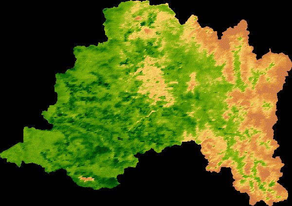

GeoStyle
Cursos
Ejemplos
Metodología
Opiniones
Sobre GeoStyle
Contacto
GeoStyle
Bienvenidos y bienvenidas!
Interactúa con el mapa !
(
Si quieres aprender a hacerlos ve a la pestaña “
Cursos
”)
NDVI año 2019 Región Metropolitana, Chile
